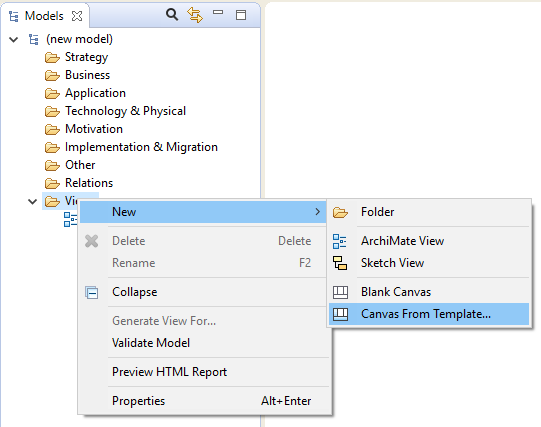
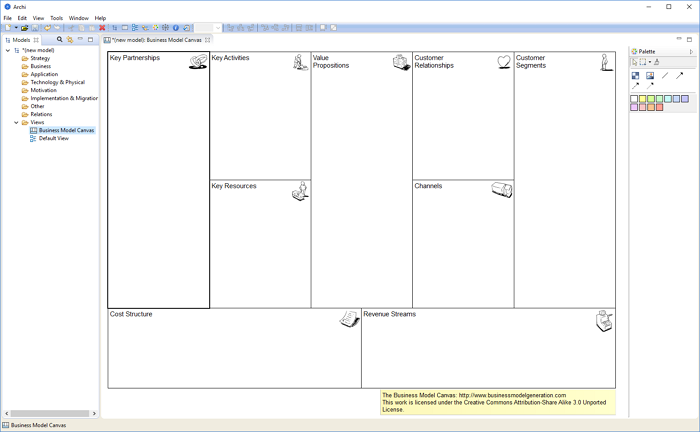
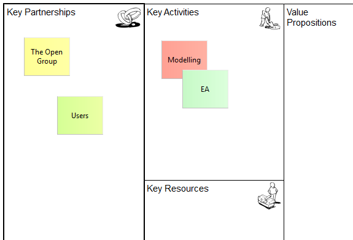

开始使用画布建模工具包的最快方法是基于现有模板创建新的画布。我们将创建一个新的 商业模式画布.


画布由9个空“块”组成。每个块充当可以包含“粘滞”和从调色板添加的其他对象的容器。每个区块当前已锁定，因此您无法移动或调整大小。实际上，块充当背景容器。每个区块还有一个与之相关的文本“提示” ，显示在 提示窗口.
从调色板中添加“置顶”并编辑置顶中的文本以创建画布模型：

将“粘滞”添加到画布
商业模式画布根据 知识共享归因-共享类似 3.0 未移植许可证